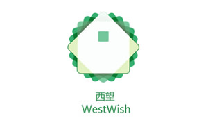

- 雷爽迪
- idesigncolors@gmail.com
- QQ：64929953


- 


喜欢设计，我是一个80后
富有创意的网页,平面设计师
我提供艺术和服务
我专注于 色彩, 版式和标准
我对UI设计、游戏、绘画也有很大的兴趣
我认为倾听和思考远比说更重要

交流沟通
无论什么样的项目，沟通都是最重要的部分， 这也是服务的一部分
-
设计
将您的想法和我的服务融合在一起，我们就会得到一个美丽生动的作品
-
制作
手写代码 XHTML/CSS&JS 兼容各主流浏览器
喜欢设计，我是一个80后
富有创意的网页,平面设计师
我提供艺术和服务
我专注于 色彩, 版式和标准
我对UI设计、游戏、绘画也有很大的兴趣
我认为倾听和思考远比说更重要
无论什么样的项目，沟通都是最重要的部分， 这也是服务的一部分
将您的想法和我的服务融合在一起，我们就会得到一个美丽生动的作品
手写代码 XHTML/CSS&JS 兼容各主流浏览器